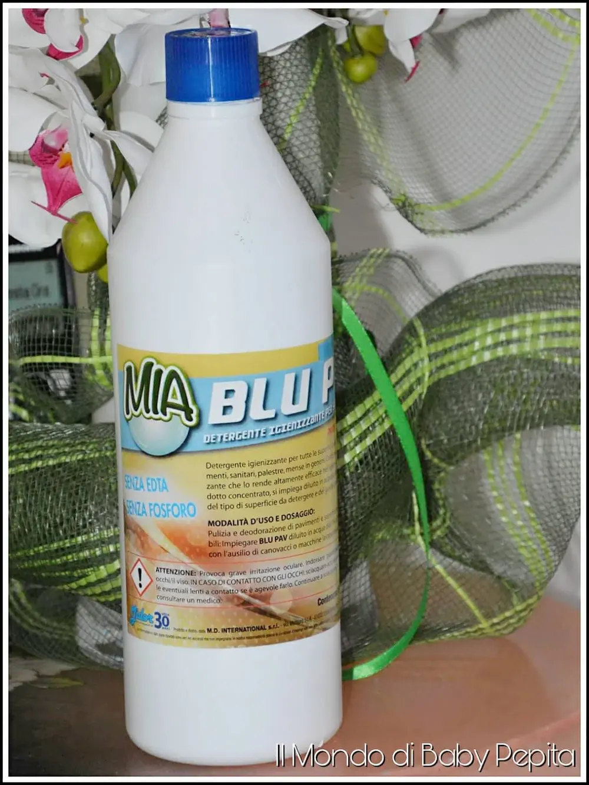
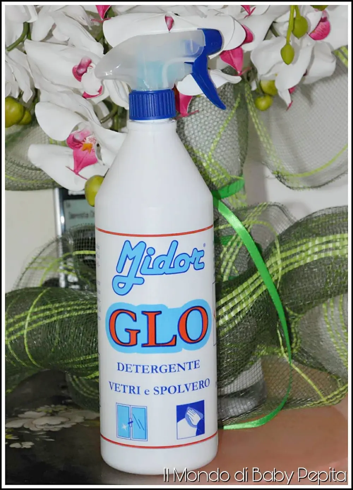
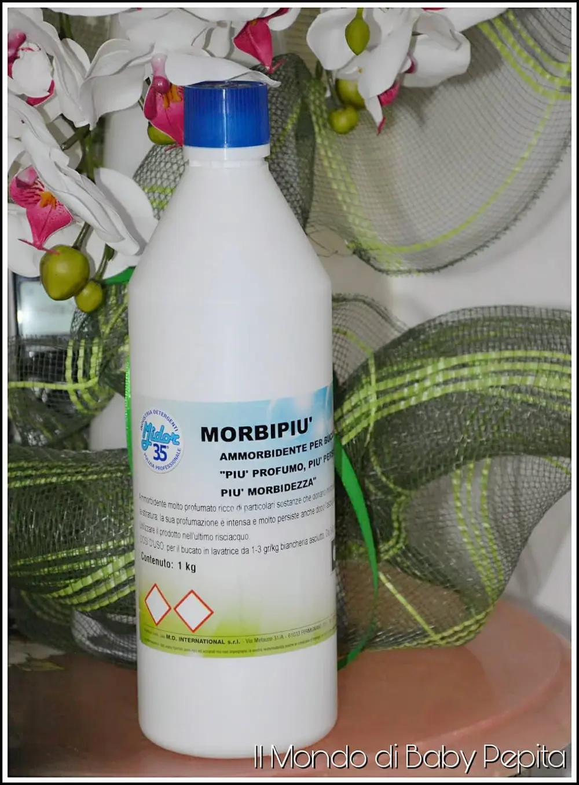
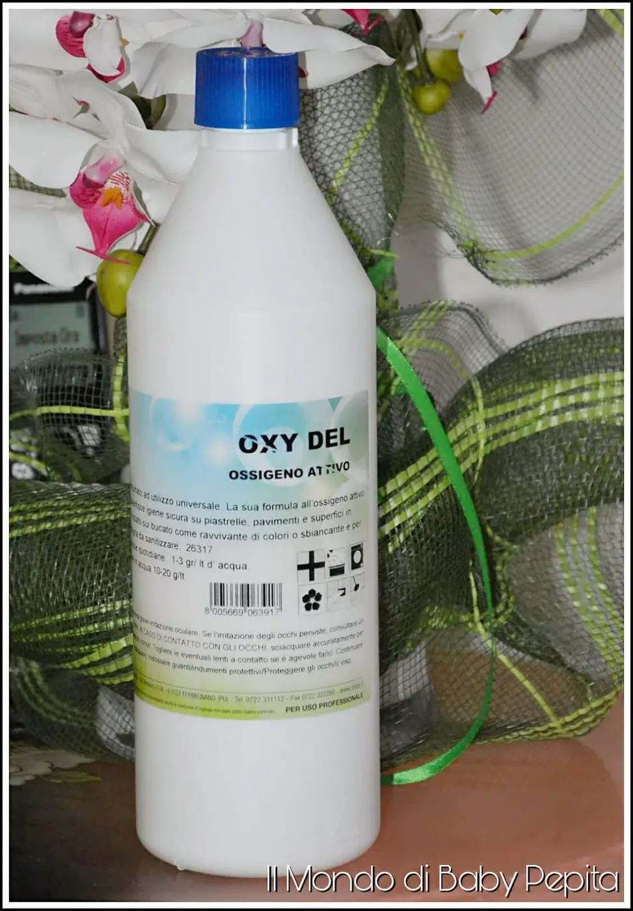

DETERSIVI: MD MIDOR
Detersivi: Vi voglio parlare ancora una volta di detergenti e pulizia per l'ambiente in cui viviamo.
Abbiamo il piacere di ospitare nel mio blog oggi è un'azienda italiana la MD MIDOR DETERSIVI, che si occupa da oltre trent'anni di prodotti di pulizia e igiene sanitario sia privato che pulizia professionale come alberghi, ristoranti, industrie, piscine, lavanderie, autolavaggi, studi medici ecc. Quindi già dalla vasta lista degli ambienti che usano già regolarmente questi detersivi, che sono ambienti più di tutti che devono avere il massimo igiene, possiamo già capire l'efficacia di questo prodotto.
E ci sono detersivi per bucato, pulizia dei pavimenti, per igienizzare i sanitari, vetri, specchi ecc ecc.
Ha tanti rivenditori in molte regioni italiane ma non solo, infatti l'azienda Midor Detersivi opera anche all'estero.
La Midor mi ha omaggiata di un kit di detersivi per testare la veridicità del prodotto.
Ho ricevuto:
• MIA BLU PAV;
• GLO;
• MORBIPIÙ;
• OXY DEL.

Guardiamoli nel dettaglio!
MIA BLU PAV

È un detergente igienizzante per tutte le superfici dure, ceramica, smalto dei pavimenti, dei sanitari ecc. Essendo un prodotto molto concentrato, va utilizzato diluito in acqua in piccole quantità. Infatti bisogna fare attenzione all'utilizzo di questo prodotto, poiché potrebbe causare irritazioni oculari. Quindi mi raccomando nel dosaggio e nell'uso.
Pur essendo molto forte come formulazione, ha comunque un odore piacevole e quindi non è fastidioso. Non è certamente un prodotto che ci delude.
GLO

È un detergente sgrassatore, ma attenzione è profumato e questo è già un gran punto a suo favore. Questo mi è arrivato con l'apposito spruzzino poiché è ottimo per superfici lucide e trasparenti, quali specchi e vetri. Ma non è da meno se utilizzato su acciaio, piastrelle, divano, alluminio e metallo. Indicato per rimuovere polvere lasciando nell'ambiente un bel profumo persistente.
MORBIPIÙ

È un ammorbidente per il bucato profumatissimo facilitando anche la stiratura. Basta una piccola quantità (2 tappi) per un bucato in lavatrice per 7-8 kg di vestiti e 1 tappo per un bucato fatto a mano per ottenere un risultato perfetto e profumato.
È un ammorbidente per il bucato profumatissimo facilitando anche la stiratura.
Basta una piccola quantità (2 tappi) per un bucato in lavatrice per 7-8 kg di vestiti e 1 tappo per un bucato fatto a mano per ottenere un risultato perfetto e profumato.
OXY DEL - ossigeno attivo
È un ossidante attivo indicato per i sanitari per l'igiene universale.
La presenza di ossigeno è principalmente indicato per la pulizia e l'igiene di pavimenti, piastrelle e qualsiasi superficie smaltata e anche in acciaio inox. Ma non solo, può essere utilizzato anche nel bagno di lavaggio in lavatrice perchè ossida le macchie in tutta sicurezza anche su capi colorati e delicati di cotone e sintetici.

Attenzione:Non utilizzare questo prodotto su superfici in ferro o rame.Per l'uso migliore diluire OXY DEL 1-3 g in un secchio d'acqua per pulizie quotidiane.
Mi sono piaciuti tantissimo questi prodotti, per la profumazione ma anche per l'efficacia di ognuno di esso. Consiglio veramente di dare un'occhiata al sito o alla pagina facebook di quest'azienda.
È possibile acquistare anche telefonicamente tramite il numero 0722.331112 Spedizione gratuita se si fa un acquisto superiore i 29,99 € Se ci si registra sul sito e si diventa membri c'è il vantaggio di un 10% di sconto.
Ovviamente questi 4 sono solo alcuni dei prodotti che la Midor dispone, ha una vasta gamma di prodotti per tutti gli usi.